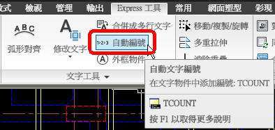

有興趣的朋友可以試試 Express工具 的 tcount指令!!

說明：
[Automatic Text Numbering] 指令:TCOUNT
功能：自動文字編號
說明：在文字物件中添加編號
註解：可以將所選取的文字依序編號，並可以決定數字號碼要放在字首、字尾或覆蓋原文字
代碼:
選取物件:
Sort selected objects by [X/Y/Select-order] : X ...(按照X軸順序)
Specify starting number and increment (Start,increment) <0,1>: 1,1 ...(第一個數字為1，累加1)
Placement of numbers in text [Overwrite/Prefix/Suffix/Find&replace..] : O ...(覆蓋原文字)
影片展示:
▼依預設使用 X 座標 會由 左至右 來編號，可以使用選取順序來逐一 由右至左 選取，這樣即可 由右至左 來編號。
PS:試了使用 Y 座標也可以 由右至左 來編號。